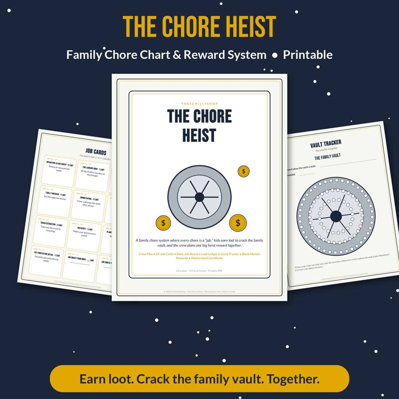
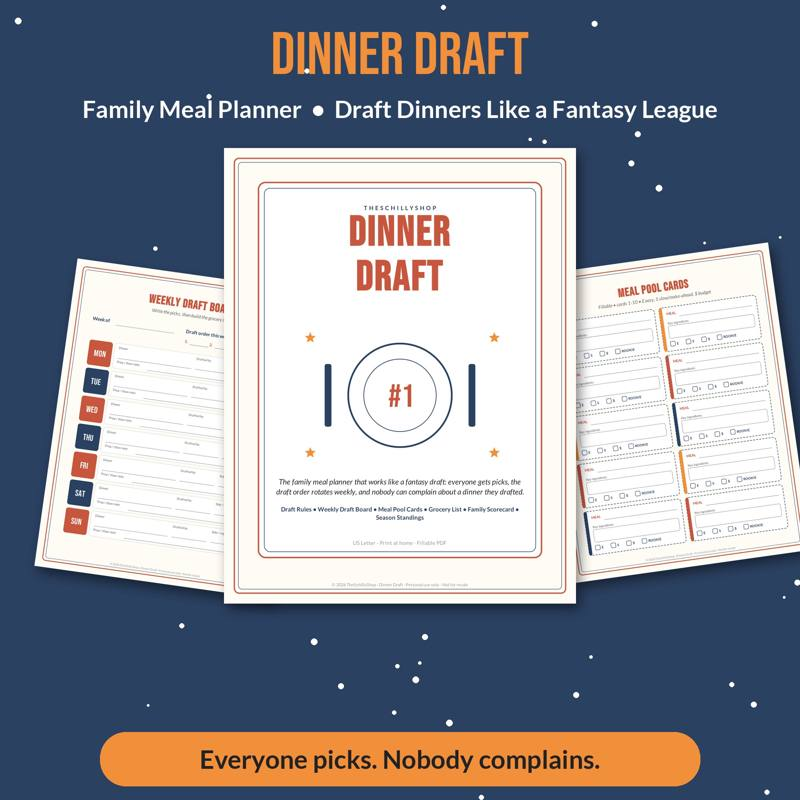

A Family Chore System That Actually Works
Most families have tried a chore chart at least once. It works great for about two weeks, and then it quietly disappears behind a magnet on the fridge. The problem usually isn't the kids — it's the system. A chore system that lasts is clear, fair, age-appropriate and a little bit fun. Here's how to build one.
Why chores matter
Chores teach kids responsibility, give them practical life skills and help them feel like valued members of the household. And frankly, they lighten the load for parents. The goal isn't perfection; it's participation.
Step 1: Decide what needs to be done
Make a list of all regular household tasks: dishes, laundry, trash, pet care, tidying, yard work, meal help. Divide them into:
- Daily tasks: make bed, clear plate, feed pet.
- Weekly tasks: vacuum, laundry, take out recycling.
- Occasional tasks: wash car, clean garage, organize closet.
Step 2: Match chores to ages
Ages 2–4
- Put toys in a bin
- Put dirty clothes in the hamper
- Help feed pets
- Wipe up small spills
- Match socks
Ages 5–7
- Make bed
- Set and clear the table
- Water plants
- Sort laundry by color
- Help put groceries away
Ages 8–11
- Load and unload the dishwasher
- Vacuum and sweep
- Fold and put away laundry
- Take out trash
- Help prepare simple meals
Ages 12 and up
- Do their own laundry
- Clean bathrooms
- Mow the lawn
- Cook a family meal
- Babysit younger siblings (with supervision as appropriate)
Kids are often capable of more than we expect. Start small and add responsibility as they get comfortable.
Step 3: Choose a format
Classic chart
A grid with names, chores and days. Kids check off boxes. Simple, visible and works for many families.
Chore cards or jar
Write chores on cards. Kids draw cards each day or week. Adds variety and fairness.
Zone system
Each family member owns a zone (kitchen, living room, bathroom) for a week, then zones rotate.
Gamified system
Turn chores into a game with missions, points and rewards. Kids are often more motivated when chores feel like a challenge or a story. One family favorite: framing chores as "missions" in a heist, where completing tasks earns "loot" toward a reward.
Our Chore Heist family chore system is a printable version of exactly that — mission cards, a crew board and a loot tracker that make chores feel like a game.
Step 4: Decide on rewards
There are a few schools of thought:
- Allowance tied to chores. Kids earn money for completed chores. Teaches money basics.
- Base chores plus paid extras. Some chores are expected as part of the family; extra jobs earn money.
- Points and privileges. Points add up to screen time, a later bedtime, a special outing or choosing dinner.
- No rewards. Chores are simply part of family life. Praise and appreciation are the reward.
Any approach can work. What matters most is consistency.
Step 5: Make expectations clear
- Show kids exactly what a finished chore looks like. "Clean your room" means different things to a parent and a child.
- Break big chores into steps. "Clean the bathroom" becomes: wipe sink, wipe mirror, empty trash, replace towel.
- Take photos of "done" so kids can compare.
Step 6: Build it into the routine
Chores stick when they're tied to existing routines:
- Make bed before breakfast.
- Clear plate after dinner.
- Ten-minute tidy before screen time.
- Saturday morning family clean-up with music.
Motivation tips
- Work together. Chores feel less like punishment when the whole family does them at the same time.
- Use timers. "Can you beat the timer?" works for many ages.
- Praise effort. Notice and thank kids for helping.
- Let kids choose. Offering a choice between two chores gives them ownership.
- Keep it fresh. Rotate chores and update the system every few months.
Common pitfalls
- Too many chores at once. Start with two or three per child.
- Redoing their work. If you redo a chore, kids learn their effort doesn't matter. Teach instead.
- Inconsistency. A system that's enforced one week and ignored the next won't last.
- Comparison. Avoid comparing siblings. Each child has their own list.
Meal help as a chore
Getting kids involved in meals — planning, shopping and cooking — is one of the most valuable "chores" of all. Even young kids can wash vegetables or stir. Our Dinner Draft family meal planner lets kids "draft" dinners for the week, which pairs nicely with cooking chores. See our guide to the meal planning game for families.
Keep it going
Hold a quick weekly family meeting to review the chart, celebrate wins and adjust. Kids are more invested in a system they help shape.
A chore system that works is one your family actually uses. Keep it simple, make it fair and add a little fun. The result is a home that runs more smoothly — and kids who know how to take care of it. Starting fresh in January? See our New Year's Eve family traditions for goal-setting ideas.

A heist-themed chore chart system with missions, loot and rewards.
See it on Payhip
Shop the printables mentioned
Chore Heist Family Chore System
A heist-themed chore chart system with missions, loot and rewards.
View on Payhip
Dinner Draft Family Meal Planner Game
A meal planner that turns picking dinners into a family draft game.
View on PayhipMore guides
- Baby Shower Prediction Game Ideas (and How to Run Them)
- Bridal Shower Games That Aren't Cringe
- Chili Cook-Off Rules and Scoring: A Complete Host Guide
- Christmas Party Games for Adults (No Supplies Needed)
- Cookie Exchange Party Ideas: How to Host a Christmas Cookie Swap
- Galentine's Party Games Your Friends Will Actually Love
- The Meal Planning Game: How to Get Your Family to Help Plan Dinners
- New Year's Eve Family Traditions Kids Will Love
- Snow Day Activities for Kids: 30 Ideas Indoors and Out
- Teacher Gift Ideas From the Whole Class (Thoughtful and Budget-Friendly)
- Thanksgiving Kids Table Activities That Keep Them Busy
- Ugly Sweater Contest Ideas: Categories, Judging and Fun Twists
- Vacation Rental Cleaning Checklist: Room-by-Room Turnover Guide
- Valentine's Escape Room for Couples at Home: How to Set One Up